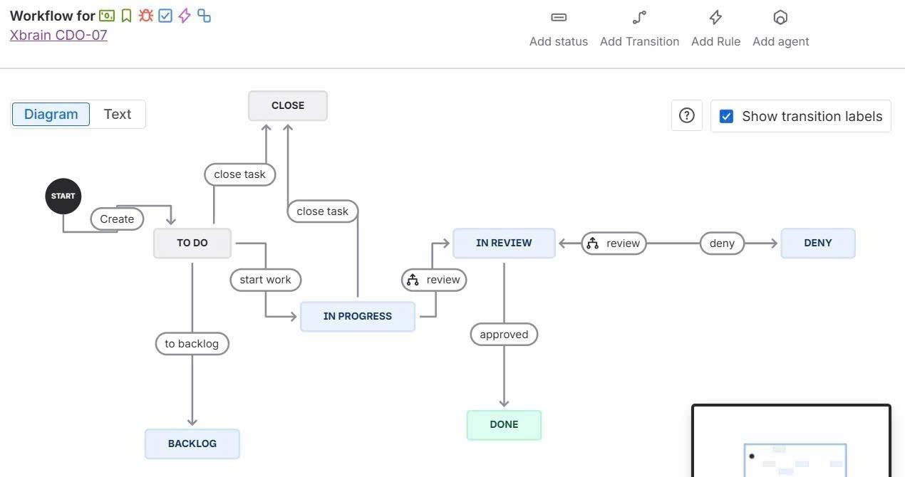

Báo cáo kết quả 4 tuần · 07/07 – 30/07/2026 · TF4 Platform
Từ audit infrastructure đến incident response, team CDO-07 tạo chuỗi delivery có evidence.
Outcome: Audit trail bất biến, cảnh báo chủ động, forensic analytics và cơ chế quản trị delivery có thể review.
Tuần 2, Jira thiếu Due date, Priority và Label; team đã chuẩn hóa metadata và workflow để quản lý task tốt hơn.
Thêm Priority, Due date và Label; sau đó nhận thấy chưa có workflow rõ ràng nên bổ sung vòng đời review trước khi task hoàn tất.

Ba tầng ghi log: query nhanh, streaming và evidence WORM phục vụ forensic.
Multi-region, Log File Validation, KMS CMK và dual delivery S3 + CloudWatch.
audit + authenticator → Subscription Filter → Firehose → S3 WORM.
Recorder, delivery channel, 32 resource types và replication staging/archive.
Chuyển audit trail thụ động thành luồng phát hiện và thông báo có thể hành động.
StopLogging, DeleteTrail, Root ConsoleLogin, SG ingress public, S3 public policy/ACL, Config recorder deletion và Access Analyzer finding.
TTD target ≤60 giây; dùng số liệu acceptance report cuối cùng khi trình bày để thống nhất nguồn evidence.
Chuỗi StopLogging + StartLogging thu hẹp blind window và giữ evidence về hành động can thiệp logging.
Scope 5 S3 prefixes vào data events; không bật PutObject trên log/evidence prefix để kiểm soát chi phí.
Product Reviews Pod → OTel filter ai_tool_audit → CloudWatch/OpenSearch → Firehose → S3 WORM.
Phản hồi CDO-08 cho Single-AZ Loss Drill.
CloudWatch ingestion baseline.
Argo CD reconcile cập nhật Kyverno CRDs; 47.36 GB/ngày.
Bỏ Replace=true, thêm ApplyOutOfSyncOnly=true.
| Ngày | Sự cố | Mức độ |
|---|---|---|
| 14/07 | Checkout / Payment Degradation | Critical |
| 15/07 | Async Order Processing & Kafka Queue Overload | Critical |
| 17/07 | Currency CPU / OTel bottleneck | Critical |
| 20/07 | Browse/Checkout errors + telemetry degradation | High |
| 23/07 | Cart & Checkout Success = 0% | High |
| 23/07 | OTel Collector / Jaeger telemetry degradation | Medium |
| 28/07 | Prometheus historical metrics loss after storage migration | Medium |
Forensic investigation bổ sung: xác định workload apply nhầm vào namespace default qua EKS audit log; không có evidence Argo CD là tác nhân trực tiếp.
Quyết định về separation of duties, dashboard, cost, immutable logging, alerting và AI auditability.
Giao việc CDO-04/CDO-08 với assignee, DoD và evidence requirement.
Checkout, payment, Kafka, database và Alertmanager routing.
Traceability chain: Jira task → assignee → DoD → PR → test/evidence → review.
Glue/Athena catalog, partition projection, 10 GB/query guardrail và truy vấn phục vụ điều tra.
Athena forensics, image provenance, forensic timeline, flash-sale alerts và Mandate 11 incident response.
Đề nghị stakeholder review evidence, ưu tiên đóng IAM gaps và phê duyệt kế hoạch validation tiếp theo.